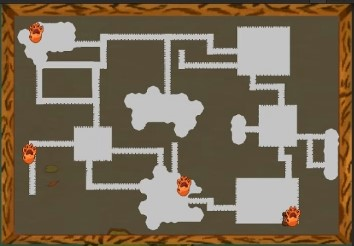
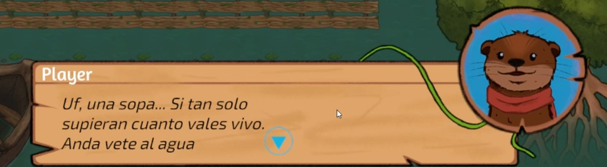
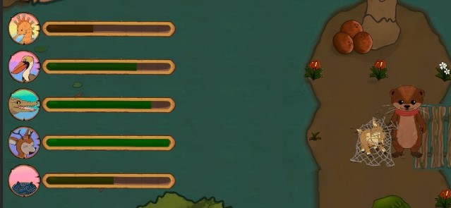

Gameplay overview showing the minimap, dialogue system, and the hot‑or‑cold thermometer.
The Context
Mangrove Rescue is an educational 2D game designed for PC, aimed at teaching little kids about mangrove ecosystems and wildlife conservation. The player explored some mangrove forest map, interacts with animal characters, and rescues them using clues and environmental feedback.
I joined the project as the lead programmer and contributed to multiple systems, from animation and visual effects to core interaction mechanics. The game was built with Unity and used the Fungus dialogue system for narrative branching. Tho i spend a very large part of my time in the project coordinating with a fractured design team
Key Features I Implemented
Below are the primary systems I designed and coded for the project.
Real‑time Minimap
Built a minimap that tracks the player's position and reveals points of interest (animal locations, NPCs, key areas). The map updates dynamically as the player explores, using a camera‑based render texture and custom icon markers.

Dialogue System with Fungus
Integrated the Fungus open‑source dialogue system to handle branching narratives, character conversations, and quest givers. Customised the Fungus flow to trigger game events (e.g., unlocking new areas, giving hints) and connected it to the game's save system.

Thermometer‑based Search Mechanic
Designed a "hot or cold" system to help players locate captured animals. The player receives visual and audio feedback (a thermometer‑like gauge) that gets warmer as they approach the target and colder as they move away. This mechanic encourages exploration and observation, reinforcing educational goals.
